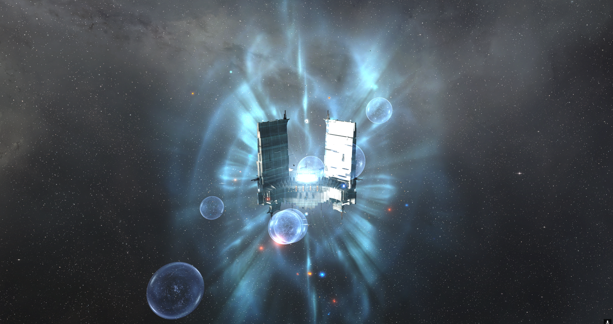

4-HWWF 老星城落幕战 — 不求成功,但求成仁

 FUXI
·
FUXI
·
 FRT
FRT
—— noraus, 2026-04-28 22:43 BJT
TL;DR — 三行看完
这是一场预知结局的体面落幕战。 04-25 装甲增强失守那天起,FRT 就清楚老星城守不住了。04-27 魔兽 PING 战前动员: "也许星城会掉、也许我们整建制会覆灭,但我们会一直开火,不求成功、但求成仁"。这场仗的胜负标准从来不是"保住星城",是 对方付多少代价 + 我们的成员有多团结。
FRT 同日丢两座 Keepstar: 上午 B-9 战场以 1 打 4 的劣势死磕,最后 B-9 星城被磨掉;下午 4-HWWF 老星城 final timer 殒落于 23:02 BJT。Imperium 为这两座结构付出 ~3,800 隐轰 (损 ~92%) + 461.8b ISK 亚 cap。
下次要补的是 SOP 不是 doctrine。 战列舰 / 海军战列舰 / 海军无畏舰 / 航空母舰 / 超级航母 五个等级损失率都低于 1%(航母 + 超航 + 海军无畏共 405 艘只损 3 艘),需要补强的是: ① 反隐轰中队部署 ② 帕拉丁级 (Paladin) bastion 模式必须重新评估(本场 9 艘损失最重) ③ 星城殒落后 5 分钟内 cap 必须 jump out 的 SOP 没执行 ④ ECM 70km 站位等点防纪律继续打磨。
战前定调 — 这是登记在册的 final timer
#bulletin-公告栏 · 2026-04-27 08:59 BJT · 魔兽/Greed jf cyno · 战前动员"上周六(4月25日),4H 装甲防御战失败了!此战我们输了... 这次的失利,是短板的暴露,更是我们不断变强的阶梯... 4月28日,下午13点开始,再来一场酣畅淋漓的战斗,再来一场没有遗憾的战斗、再来一场载入史册的战斗。 ... 也许星城会掉、也许我们整建制会覆灭,但我们会一直开火、一直添油、一直开火,直到弹尽粮绝、直到最后一刻!"
#bulletin-公告栏 · 2026-04-28 17:09 BJT · noraus · 战斗号令"@everyone 让这些人和 4H 星城陪葬。感谢 FC、后勤、市场、公司管理、每个关心的朋友,抱歉我的顶层错误让 4H 星城受损,但是感谢你们陪我玩到她的终点。现在开火!"
#strat-战略起队 · 2026-04-28 20:45 BJT · noraus · B-9 失守战报"B9 星城刚刚炸掉,我们的舰队 1 打 4 把对方杀完了,INIT 把银鹰散开当狂怒用,最后星城磨掉,对方终于进了超期,感谢我的 B9 朋友们。
现在我们专心 4HW,我们杀了 1500 个隐轰,对方还有 890 个!"
这是 FRT 同日两座 Keepstar 接连失守的双战场战。B-9 星城上午先丢(FRT 在 1:4 兵力劣势下战至最后),下午全员压到 4-HWWF 打 final timer。这场仗的赢的标准不是"保结构",是"让对方付出尽可能高的代价、让团队问心无愧"。
战场概览
双方阵容
守方 · FRT
4,160 人 · 1,269 船损 · 315b ISK(含 4-HWWF 星城 180.5b)
| 联盟 | 人数 |
|---|---|
| Fraternity. (FRT 主体) | 3,208 |
| 北部联盟 (NC.) · 大流行军团 (PL) · TEST 友军 | 425 |
| Insidious. · F.A.X · SLYCE · SYN(WC 同盟) | 397 |
攻方 · Imperium (蜜蜂阵线)
6,929 人 · 11,378 船损 · 461.8b ISK
| 联盟 | 人数 |
|---|---|
| Goonswarm Federation (蜜蜂) | 3,432 |
| The Initiative. (INIT) | 1,535 |
| Dracarys. | 717 |
| Brave · Sigma · IGC · Fanatic · SOB | 771 |
FC 起队 + 战术广播 (BJT)
制式效果分析(按舰船等级展示)
每个等级独立成图。蓝色边框 = 部署人数,实心色块 = 损失数量(绿=低损失/黄=中等/红=高损失)。数据全部基于 WarBeacon 战报。
🛡️ FRT 阵营 — 各等级表现 (按总伤害排序)
 神示级海军型Revelation Navy Issue · 海军 · zKB↗
神示级海军型Revelation Navy Issue · 海军 · zKB↗ 莫洛级海军型Moros Navy Issue · 海军 · zKB↗
莫洛级海军型Moros Navy Issue · 海军 · zKB↗ 泽尼塔级Zirnitra · zKB↗
泽尼塔级Zirnitra · zKB↗ 神示级Revelation · T1 · zKB↗
神示级Revelation · T1 · zKB↗ 莫洛级Moros · T1 · zKB↗
莫洛级Moros · T1 · zKB↗ 纳迦法级舰队型Naglfar Fleet Issue · 海军 · zKB↗
纳迦法级舰队型Naglfar Fleet Issue · 海军 · zKB↗ 纳迦法级Naglfar · zKB↗
纳迦法级Naglfar · zKB↗ 凤凰级海军型Phoenix Navy Issue · 海军 · zKB↗
凤凰级海军型Phoenix Navy Issue · 海军 · zKB↗ 凤凰级Phoenix · T1 · zKB↗
凤凰级Phoenix · T1 · zKB↗


 鹏鲲级Rokh · zKB↗
鹏鲲级Rokh · zKB↗ 灾难级海军型Apocalypse Navy Issue · 海军 · zKB↗
灾难级海军型Apocalypse Navy Issue · 海军 · zKB↗ 狂暴级舰队型Tempest Fleet Issue · 海军 · zKB↗
狂暴级舰队型Tempest Fleet Issue · 海军 · zKB↗ 灾难级Apocalypse · T1 · zKB↗
灾难级Apocalypse · T1 · zKB↗ 死亡漩涡级Maelstrom · zKB↗
死亡漩涡级Maelstrom · zKB↗ 巴盖斯级Barghest · 海军 · zKB↗
巴盖斯级Barghest · 海军 · zKB↗ 地狱天使级Abaddon · zKB↗
地狱天使级Abaddon · zKB↗ 多米尼克斯级Dominix · T1 · zKB↗
多米尼克斯级Dominix · T1 · zKB↗ 乌鸦级Raven · T1 · zKB↗
乌鸦级Raven · T1 · zKB↗ 实践级Praxis · zKB↗
实践级Praxis · zKB↗ 猛鲑级Ferox · T1 · zKB↗
猛鲑级Ferox · T1 · zKB↗ 暴风级Hurricane · T1 · zKB↗
暴风级Hurricane · T1 · zKB↗ 德雷卡瓦级Drekavac · zKB↗
德雷卡瓦级Drekavac · zKB↗ 灵感级Gnosis · zKB↗
灵感级Gnosis · zKB↗ 猛鲑级海军型Ferox Navy Issue · 海军 · zKB↗
猛鲑级海军型Ferox Navy Issue · 海军 · zKB↗ 先驱者级海军型Harbinger Navy Issue · 海军 · zKB↗
先驱者级海军型Harbinger Navy Issue · 海军 · zKB↗ 布鲁提克斯级海军型Brutix Navy Issue · 海军 · zKB↗
布鲁提克斯级海军型Brutix Navy Issue · 海军 · zKB↗ 希兹里尔级Khizriel · 海军 · zKB↗
希兹里尔级Khizriel · 海军 · zKB↗


 奥苏斯级Orthrus · 海军 · zKB↗
奥苏斯级Orthrus · 海军 · zKB↗ 送葬者级海军型Exequror Navy Issue · 海军 · zKB↗
送葬者级海军型Exequror Navy Issue · 海军 · zKB↗ 狂怒者级Vexor · T1 · zKB↗
狂怒者级Vexor · T1 · zKB↗ 狞獾级Caracal · T1 · zKB↗
狞獾级Caracal · T1 · zKB↗ 维德马克级Vedmak · T1 · zKB↗
维德马克级Vedmak · T1 · zKB↗ 鱼鹰级海军型Osprey Navy Issue · 海军 · zKB↗
鱼鹰级海军型Osprey Navy Issue · 海军 · zKB↗ 启示级海军型Omen Navy Issue · 海军 · zKB↗
启示级海军型Omen Navy Issue · 海军 · zKB↗ 海燕级Cormorant · T1 · zKB↗
海燕级Cormorant · T1 · zKB↗ 奇奇莫拉级Kikimora · T1 · zKB↗
奇奇莫拉级Kikimora · T1 · zKB↗ 渡鸦级Corax · T1 · zKB↗
渡鸦级Corax · T1 · zKB↗ 海燕级海军型Cormorant Navy Issue · 海军 · zKB↗
海燕级海军型Cormorant Navy Issue · 海军 · zKB↗

 兀鹫级Vulture · T2 · zKB↗
兀鹫级Vulture · T2 · zKB↗ 剑齿虎级Sabre · T2 · zKB↗
剑齿虎级Sabre · T2 · zKB↗

 净化级Purifier · T2 · zKB↗
净化级Purifier · T2 · zKB↗⚔️ 攻方 Imperium — 各等级表现 (按总伤害排序)
 乌鸦级海军型Raven Navy Issue · 海军 · zKB↗鹏鲲级Rokh · zKB↗死亡漩涡级Maelstrom · zKB↗乌鸦级Raven · T1 · zKB↗
乌鸦级海军型Raven Navy Issue · 海军 · zKB↗鹏鲲级Rokh · zKB↗死亡漩涡级Maelstrom · zKB↗乌鸦级Raven · T1 · zKB↗ 台风级Typhoon · T1 · zKB↗
台风级Typhoon · T1 · zKB↗ 马克瑞级Machariel · 海军 · zKB↗猛鲑级Ferox · T1 · zKB↗
马克瑞级Machariel · 海军 · zKB↗猛鲑级Ferox · T1 · zKB↗

 斯威普级Svipul · ORE · zKB↗奇奇莫拉级Kikimora · T1 · zKB↗
斯威普级Svipul · ORE · zKB↗奇奇莫拉级Kikimora · T1 · zKB↗

 休津级Huginn · T2 · zKB↗
休津级Huginn · T2 · zKB↗ 曲剑级Scimitar · T2 · zKB↗
曲剑级Scimitar · T2 · zKB↗ 飞燕级Flycatcher · T2 · zKB↗
飞燕级Flycatcher · T2 · zKB↗


人均伤害排行(主流制式 ≥ 10 飞行员)
WarBeacon 的总伤害会把舰船、建筑、部署物一起计入。这里把口径拆开: 对舰船伤害更接近实际火力贡献, 对结构/部署物伤害包含 Keepstar、泡泡等目标。
FRT 阵营 · 人均伤害 Top 10
| 等级 | 舰船 | 人数 | 总伤害/人 | 舰船/人 | 结构部署物/人 |
|---|---|---|---|---|---|
| 无畏舰 | 泽尼塔级 Zirnitra ★ 泡泡清理 | 20 | 393,619 | 4,943 | 388,676 |
| 海军无畏舰 | 莫洛级海军型 Moros NI | 82 | 121,854 | 72,870 | 48,983 |
| 海军无畏舰 | 神示级海军型 RNI | 103 | 112,658 | 44,234 | 68,424 |
| 无畏舰 | 莫洛级 Moros | 13 | 98,197 | 69,664 | 28,533 |
| 无畏舰 | 纳迦法级 Naglfar | 10 | 84,604 | 84,604 | 0 |
| 超级航母 | 冥府级 Hel | 30 | 82,237 | 57,470 | 24,767 |
| 超级航母 | 夜神级 Nyx | 30 | 61,597 | 39,587 | 22,010 |
| 无畏舰 | 神示级 Revelation | 59 | 60,659 | 32,771 | 27,888 |
| 战略巡洋舰 | 洛基级 Loki | 11 | 52,659 | 52,659 | 0 |
| 掠夺舰 | 恶狼级 Vargur | 22 | 48,581 | 48,581 | 0 |
攻方 Imperium · 人均伤害 Top 10
| 等级 | 舰船 | 人数 | 总伤害/人 | 舰船/人 | 结构部署物/人 |
|---|---|---|---|---|---|
| 海军巡洋舰 | 送葬者级海军型 Exequror NI | 14 | 163,420 | 8,467 | 154,952 |
| 重型突击巡洋舰 | 银鹰级 Eagle ★ 主结构输出 | 82 | 125,166 | 10,963 | 114,204 |
| 海军战列舰 | 乌鸦级海军型 (海军乌鸦) | 118 | 110,729 | 26,567 | 84,162 |
| 黑隐特勤舰 | 寡妇级 Widow | 11 | 69,400 | 32,695 | 36,705 |
| 重型突击巡洋舰 | 渎圣级 Sacrilege | 60 | 50,535 | 5,139 | 45,396 |
| 截击舰 | 十字军级 Crusader | 46 | 43,418 | 2,183 | 41,235 |
| 战列舰 | 鹏鲲级 Rokh | 143 | 42,093 | 2,304 | 39,789 |
| 战列舰 | 乌鸦级 Raven | 69 | 37,183 | 10,244 | 26,939 |
| 战列舰 | 死亡漩涡级 Maelstrom | 79 | 35,334 | 7,336 | 27,999 |
| 隐形轰炸舰 | 净化级 Purifier | 571 | 30,710 | 1,802 | 28,908 |
⚡ 口径修正:多个高总伤舰种,实际打的不是舰船
🛡️ 守方 · 泽尼塔级 Zirnitra (FRT 阵营)
20 个 Zirnitra 总伤害 7.87M,但其中 7.77M 打在结构/部署物上,对舰船只有 98.9K。人均拆:总 393,619 / 对舰船 4,943 / 对结构 388,676。
更精确地说 — Zirnitra 全程焊在 4-HWWF 外部泡泡阵以及 B-9 星城上刷无效输出,主目标是大型机动跃迁扰断器 I/II(anchor bubbles):WarBeacon 明细里 Zirnitra 对大型泡泡造成 7.77M 伤害,拿到 42 个大型泡泡 final blow。输出最高的那艘 znt 单艘打了 ~1M 伤害,击杀 23 个大型机动跃迁扰断器。所以本场 Zirnitra 更像"清泡泡 / 反 anchor"工具,不能按总伤害直接评为跨阵营火力王。
⚔️ 攻方 · 送葬者级海军型 Exequror NI (Imperium 阵营)
14 个攻方 ENI 总伤害 2.29M,但其中 2.17M 也是打在结构/部署物上,对舰船只有 118K。人均拆:总 163,420 / 对舰船 8,467 / 对结构 154,952。
送葬者级海军型本是后勤巡洋(Logi),但本场 Imperium 给它装了导弹/无人机做"结构刷子" — 直接刷 4-HWWF 星城本体的护盾/装甲血量,顶 Keepstar reinforce timer 进度。对攻方来说这是"有效战略输出"(实际推 timer 让结构 RF),但对单船战斗力评估来说不算 anti-ship 火力。同样性质的还有银鹰级 (114K/人结构伤) / 渎圣级 / 截击舰 / 鹏鲲级,本场 Imperium 大量刷点击星城本体 — 这是攻方在"硬磨"结构的指标,不是杀船能力。
📣 口径修正感谢 FUXI-冰月冰月冰 / Fr0zenmn 提醒(Zirnitra 焊外部泡泡 / B-9 星城刷伤害)以及对送葬者级海军型角色的指正。
攻方 Keepstar 伤害:隐轰是主力
这里不再把泡泡、MTU、战机等部署物算进建筑输出,只统计 victim type = Keepstar 的伤害。WarBeacon 明细里有 #System、胶囊等归因异常项,下表只看真实舰船制式。
| 制式 | 人数 | Keepstar 总伤害 | Keepstar/人 | 说明 |
|---|---|---|---|---|
| 净化级 Purifier | 471 | 14.87M | 31,567 | 单一制式第一,隐轰主力 |
| 猎犬级 Hound | 183 | 5.13M | 28,008 | 隐轰第二梯队 |
| 缪宁级 Muninn | 100 | 3.37M | 33,735 | HAC 持续补结构伤害 |
| 蝎尾怪级 Manticore | 161 | 3.02M | 18,738 | 隐轰第三梯队 |
| 乌鸦级海军型 Raven NI | 52 | 2.15M | 41,277 | 海军战列补结构伤害 |
| 十字军级 Crusader | 34 | 1.71M | 50,238 | 人均高,总量不是主轴 |
| 纳美西斯级 Nemesis | 53 | 878K | 16,568 | 拿到 Keepstar final blow |
结论:隐轰没有消失,只是被“总伤害/人”排名摊薄了。按 Keepstar 总伤害看,四类隐轰合计约 23.9M Keepstar 伤害,其中 Purifier 单项 14.87M 全场第一。送葬者海军、银鹰等之前看起来高,主要是打大型泡泡/部署物,不应算作 Keepstar 主伤害。
FRT 反隐轰:谁杀 bomber 最有效
我们这边的关键任务不是刷总伤害,而是打掉隐轰循环。评价反隐轰应看 隐轰 final blow、参与击杀数量和单位人数效率。
| 制式 | 人数 | 隐轰 final | 参与隐轰击杀 | 对隐轰伤害 |
|---|---|---|---|---|
| 金鹏级 Tengu | 132 | 502 | 1,020 | 1.29M |
| 猛鲑级 Ferox | 271 | 459 | 1,139 | 1.21M |
| 寒鸦级 Jackdaw | 129 | 330 | 971 | 898K |
| 圣卒级 Legion | 46 | 220 | 442 | 567K |
| 帕拉丁级 Paladin | 90 | 199 | 468 | 546K |
结论:金鹏和猛鲑是规模化反隐轰主力;寒鸦补足快速锁小船;圣卒/海神等小规模 T3C 单位人数效率高,适合做专职猎 bomber 小队。
🎯 总结 — 双方各自的进攻 / 防守 / 短板
按阵营分两栏,每栏列各自的进攻强项 + 防守强项 + 短板。这样不会把双方混在一起。
FRT 阵营
⚔️ 进攻最给力
- 莫洛级海军型 / 神示级海军型 (海军无畏舰) — 总伤害高,且对舰船人均约 73K / 44K,是真正主力舰船火力
- 泽尼塔级 Zirnitra (无畏舰) — 总伤害 393K/人,但舰船伤害仅 4.9K/人;本场主要价值是清外部泡泡和压部署物
- 金鹏级 / 猛鲑级 / 寒鸦级 — 反隐轰主轴:金鹏 502 个隐轰 final,猛鲑参与 1,139 个隐轰击杀,寒鸦 330 个隐轰 final
🛡️ 防守最稳
- 灾难级海军型 APN — 187 部署 / 损失率 1.6% / 507 次最后一击 ★ MVP
- 鹏鲲级 Rokh — 539 部署 / 损失率 3.9% / 504 次最后一击
- 狂暴级舰队型 TFI — 211 部署 / 损失率 3.8%
- 航母 82 艘 + 超航 103 艘(绝念 + 执政官 + 尼铎格尔 + 奇美拉 + 万古 + 冥府 + 夜神 + 飞龙)— 185 艘 cap-tier 仅损 1 艘执政官
- 海军无畏 220 艘(神示海军 / 莫洛海军 / 凤凰海军 / 纳迦法舰队)— 0.9% 损失率
⚠️ 短板
- 反隐轰中队完全缺位 — 让对方隐轰群循环 8 小时
- 帕拉丁级 9 艘损失 (11.9b) — 会战装备 bastion 锁死陷阱,恶狼级人均伤害还高 70%
- 星城殒落后 30 分钟 cap 撤离 SOP 失灵 — 又损失 7 艘 cap-tier
- ECM 站位纪律 — noraus 中途广播提醒拉到 70km+
- 猛鲑级人均伤害仅 7,437 — 性价比最低
攻方 Imperium
⚔️ 进攻最给力
- 净化级 / 猎犬级 / 蝎尾怪级 / 纳美西斯级 (隐轰群) — Keepstar 主力来源:四类隐轰合计约 23.9M Keepstar 伤害,净化级单项 14.87M 全场第一
- 缪宁级 + 乌鸦级海军型 — 非隐轰补充结构伤害,但 Keepstar 总量低于隐轰群
- 银鹰级 / 送葬者级海军型 — 主要价值更偏清外部泡泡和部署物,不能按“结构/部署物”总和误判成 Keepstar 主力
- 寡妇级 Widow (黑隐特勤舰) — 仅 2 艘但 jam 锁死星城点防
🛡️ 防守最稳
- 银鹰级 Eagle — 远射 + 高机动 + 屏障 buffer,FRT 没拉 anti-snipe 距离 → 全程低损输出
- 渎圣级 Sacrilege — 60 部署 / 损失率高但 alpha 强
- 0 cap 部署 — 不暴露 cap 资产,纯亚 cap 磨
⚠️ 短板
- 0 cap 部署 — 怕 FRT alpha,不敢直接对 cap 线 (优点 + 短板二者皆是)
- 隐轰 92% 损失率(~3,500 艘) — 硬磨星城代价沉重
- 狂怒者级廉价凯姿 98.5% 损失 — 纯 feeder,无实际输出贡献
- 没投超级航母 — 缺乏战机反 FRT 103 艘 super 战机编队
- 缪宁级 173 艘损失 (35b) — 被 FRT 鹏鲲级远射打烂
战损对比
| 项目 | FRT | 攻方 Imperium |
|---|---|---|
| 船损艘数 | 1,269 | 11,378 |
| 亚系列 + cap ISK | 134.5b | 461.8b |
| 结构损失 | 2× Keepstar B-9 (上午) + 4-HWWF (180.5b 下午) | — (无结构损失) |
| Cap 损失数 | 19 艘 9× 帕拉丁 · 3× 恶狼 · 1× 克洛诺斯 · 2× 神示 · 1× 纳迦法 · 1× 神示海军 · 1× 莫洛海军 · 1× 执政官 | 4 艘 4× Monitor (logi) |
| WarBeacon 效率(亚系列) | 77.5% | 22.5% |
结论
这场仗的成功标准从一开始就不是"保住星城"。是把对方代价拉满,且让团队问心无愧打完这一仗。两个目标都达成了。
- 已确定:FRT 同日丢两座 Keepstar (B-9 + 4-HWWF),硬件损失 315b。Imperium 付 462b 亚 cap + ~3,500 隐轰 (~92% 损失率)。这不是失败,是带血代价的预期交换。
- 已确定:双方输出任务不同 — 攻方 Keepstar 伤害主要来自隐轰群,银鹰/送葬者海军更多承担清泡泡和部署物;FRT 主要打舰船和清隐轰,金鹏 / 猛鲑 / 寒鸦是反隐轰击杀核心。
- 已确定:帕拉丁级 9 艘损失(11.9b)是亚 cap 最重 — 会战装备 (bastion) 模式陷阱明显。同条件下恶狼级损失只 1/3。
- 已确定:星城死后 30 分钟内 dread 撤离失败,神示级海军型 / 莫洛级海军型 / 2× 神示级 / 4× 帕拉丁级 接连被点 — 是 SOP 问题不是 doctrine 问题。
- 战歌 / Ezio Harry SOTG (22:40 BJT):"新战术,新安排,更高效的指挥和更有素质的成员,问心无愧了"
FRT 下次再遇这种情况怎么调整
1. 部署专门反隐轰中队 — 这是 #1 优先项
本场 Imperium 隐轰群打出约 23.9M Keepstar 伤害,是磨星城的第一主力来源。FRT 已经靠金鹏 / 猛鲑 / 寒鸦 / 圣卒杀出大量隐轰,但仍缺少一支只负责扫 bomber 的专门中队。noraus 战中已经在喊 "我们杀了 1500 个隐轰" — 这数字本可以更大。
下次必备:
- 大型烟雾弹 T1 战列舰中队 (灾难级 T1 + 4× 大型力场烟雾弹):30-50 艘,星城周围 50km 散开,每 10s cycle 烧隐轰。烟雾弹 AOE 不挑 cloak 状态。
- 金鹏级重导中队扩编:本场金鹏拿了 502 个隐轰 final,参与 1,020 个隐轰击杀,但只损失 11 艘 = 部署量太少。下次加到 100+ 金鹏专职反隐轰。
- 猛鲑/寒鸦反隐轰分队:猛鲑参与 1,139 个隐轰击杀,寒鸦拿 330 个隐轰 final。下次可以明确拆出反 bomber anchor,不要混在主射击目标里。
- 103 艘超级航母(万古/冥府/夜神/飞龙)的重型战机主动反 frig:本场 103 艘 super 全部 0 损失但战机输出有限。重型战机撕隐轰 5 秒一架,这是 0 成本反制。
- 移动跳跃信标干扰器 阻断对方桥:Imperium 用寡妇级跨区桥接隐轰,移动 cyno 干扰能切断 cycle。
2. 帕拉丁级必须改 doctrine — 9 艘损失是讯号
9 艘帕拉丁级损失(11.9b)是亚 cap 最重舰种。会战装备模式锁死 60s = 主目标固定。同条件下恶狼级死 3 艘,克洛诺斯级死 1 艘 — 损失差别明显。
三选一:
- 方案 A — 改恶狼级(机动屏障):屏障 buffer + 700mm 自动加农炮,bastion 抗压更强,Minmatar 自动加农炮还能近距点隐轰。本场数据已验证恶狼级损失率显著低于帕拉丁。
- 方案 B — 帕拉丁不开会战装备:active rep + 超光速激光长射程,放弃 bastion mode。损失 DPS 但生存力高。
- 方案 C — 帕拉丁配 dedicated FAX:每 3 个帕拉丁跟 1 个使徒级,active rep + 电容链。需要 FAX 数量翻倍。
个人推荐 方案 A — 本场海军 dread alpha 已经很充沛,Marauder DPS 不该是核心补充,恶狼级比帕拉丁更适合大舰队配合。
3. "星城殒落 + 5 min, 全 cap jump out" SOP
本场星城 23:02 殒落,接下来 30 分钟内 FRT 又损失 7 艘 cap-tier(神示级海军型 / 莫洛级海军型 / 2× 神示级 / 4× 帕拉丁级)。原因是 dread 留场过久,被 Imperium 巩固阵地后反扫。
Doc 22:11 那条 "如果你在站内,即刻下线" 的广播是站内 logoff 旗舰预警,但已经在场上的 dread 没有相应撤离 SOP。
下次必备:
- "星城死 + 5 min" rule:Keepstar 殒落 5 分钟内,所有 cap 必须 jump out 到预设系统。FC pre-brief 写进 MOTD。
- 跳跃信标预架:旁边 1-2 跳系统提前架信标,死星城那一刻立即跨区。纳迦法死时被 129 人围,就是因为没有出口。
- 下线不可信:Imperium 在星城死后部署 HIC 泡锁 cap,logoff 会被记录后续被点。直接 jump,不要赌。
4. ECM 站位纪律继续打磨
noraus 战中喊话: "停止 ECM, 拉离星城越远越好。超过 70KM 再开。" 说明场上有人在星城附近开 ECM 反而被星城脉冲反制(Keepstar 大型脉冲会清除 50km 内所有 jam),浪费了 ECM cycle 还吃星城驻留。
下次星城防御战 pre-brief 必须包含: EWAR 船全程站 70km+。
5. 亚 cap doctrine 不需要调整 — 继续用
鹏鲲级 / 灾难级海军型 / 狂暴级舰队型 损失率都在 4% 以下,主炮射程合理 + 屏障抗压充足。继续用。
唯一可以微调的是 猛鲑级减量:6.9% 损失率比鹏鲲级高 2 倍,且单艘伤害低。下次如果是 BB 主战可以把猛鲑名额转给鹏鲲级。猛鲑级留给散打/BLOPS。
6. "小航大于大航" — noraus 战前指引,本场未充分体现
04-27 noraus 战前 PING 提醒:"小航大于大航 — 如果你的航模不能开其他船, 那么应该准备好"。本场实际部署:航空母舰 82 艘 (绝念 33 / 执政官 20 / 尼铎格尔 19 / 奇美拉 10) + 超级航母 103 艘 (万古 30 / 冥府 30 / 夜神 30 / 飞龙 13),仅 1 艘执政官损失。
下次 timer 战前需要明确: 航母群继续维持后排放战机,super 战机编队应更主动反隐轰。185 艘航母+超航全部 0 损失证明站位 SOP 已经稳,机会成本是战机出动率不够激进。
📔 战场私记 — 作者亲历

我在星城爆炸后准备旗舰跳的时候发现 — 出门忘带燃料。SB 死定了。
但是看到星城复活的截图,看到 小航居然挂靠了,用跃迁逃生。
🙏 感谢星城肉山盾保佑
 artist D · 2026-04-28 BJT 23:0X · 4-HWWF
artist D · 2026-04-28 BJT 23:0X · 4-HWWF
感谢 + 战后
感谢 4,160 名 FRT 阵营线员在 9 小时长战中坚持 — 鹏鲲级 504 次最后一击 + 灾难级海军型 507 次,说明每一发主炮都打出了价值。感谢 NC. + PL + TEST 盟友的 dread alpha 支援。
感谢 noraus、魔兽、Ezio Harry、Qxlt4 14、Doc、Kudaliar Beddelver、jubah 等 FC 的全天指挥;感谢 SARD 在星城殒落后的撤离广播,让更多线员安全下线。
正如 noraus 所说: "2021.2.3 - 2026.4.28 老星城托举这个联盟和他的成员变成更有经验更资历的集体。" — 老站送走了,经验和团结留下来了。下个 timer 见。

 Fuxi Legion [FUXI]
Fuxi Legion [FUXI]
 Fraternity. [FRT]
Fraternity. [FRT]